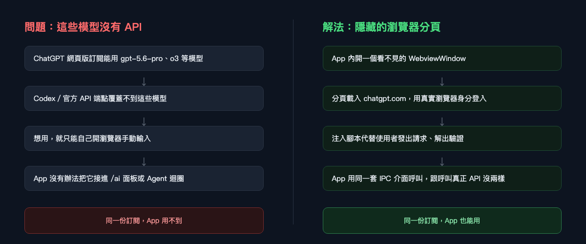
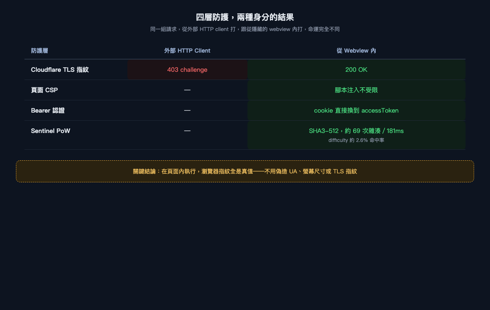
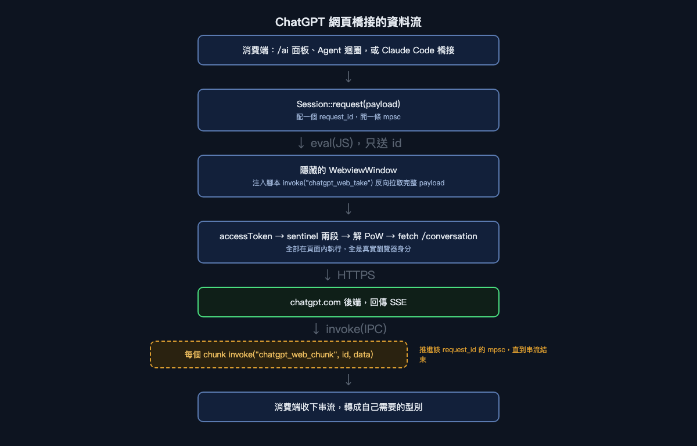
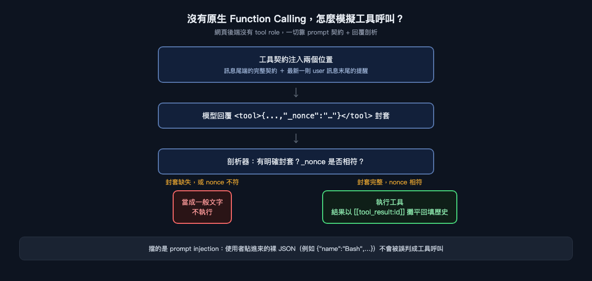

ChatGPT 網頁版沒有 API？那就自己在瀏覽器裡造一座橋
一份訂閱買了網頁版才有的模型，你的 App 卻連不上——這篇文章記錄了我們怎麼在一個隱藏的瀏覽器分頁裡，把「網頁專屬功能」重新接成一支可以被程式呼叫的服務，以及沿途踩過的四層防護、一套工作量證明，和一個沒有原生 function calling 卻要模擬工具呼叫的難題。
先說一個很多訂閱用戶會遇到的情境：你付錢訂閱了 ChatGPT，網頁版介面裡看得到 gpt-5.6-pro、o3 這些模型，用起來也順手。但你想把它接進自己的工具——寫程式用的終端機助理、內部知識庫問答、Agent 自動化迴圈——結果發現官方開放的 API 端點，跟網頁版看到的模型清單根本是兩回事。同一份訂閱，一部分只活在瀏覽器分頁裡，出不來。
這不是 bug，是刻意的產品區隔：ChatGPT 的網頁前端走的是它自己的後端（/backend-api/conversation），跟對外開放的 Responses API（/backend-api/codex/responses，也就是 Codex 端點）是兩條不同的路，各自維護、各自限制。你能在瀏覽器裡看到的模型，不代表你能用程式碼呼叫到。
三個必須先講清楚的風險
在動手之前，這件事有三個代價，值得先攤開來說，因為我們最後也把它們原封不動放進了產品的風險提示裡：
- 這違反 OpenAI 的服務條款。 用程式化的方式驅動一個原本設計給人類使用的網頁介面，帳號有被停權的風險。
- 工具呼叫是模擬出來的。 網頁後端沒有原生 function calling，一切靠 prompt 契約加上回覆剖析湊出來，保真度天生比不過真正的 API。
- 維護成本會持續存在。 反爬蟲的工作量證明演算法是社群逆向出來的，OpenAI 只要調整一次，整條路徑就直接回 403，得回去追新的實作。
這篇文章不是在教人繞過誰的防護，而是記錄一次「把已知風險攤在陽光下，仍然決定做，並且把每個技術選擇的理由講清楚」的工程過程。

為什麼是「瀏覽器分頁」，而不是「模擬一個瀏覽器」
第一個直覺的做法,通常是找一支 HTTP client，把瀏覽器會送出的標頭、cookie、User-Agent 全部複製一份，直接打 API。我們一開始也是這樣測的，結果撞上了 Cloudflare 的 TLS 指紋辨識：沒有真實瀏覽器的 TLS handshake 特徵，請求還沒到應用層就被判定成「疑似機器人」，直接吃一個帶 cf-mitigated: challenge 的 403。
逐層往下測完整個鏈路後，結論很清楚：與其在 Rust 裡拼裝一個假瀏覽器，不如乾脆用一個真瀏覽器。Tauri 本身就內建了 WebviewWindow——一個貨真價實的系統瀏覽器元件。把它藏起來（不顯示視窗），讓它載入 chatgpt.com、正常登入，所有請求都由頁面內部的 JavaScript 發出，而不是從 Rust 端模擬。
這個選擇讓後面三層防護幾乎不戰而勝：

跑在頁面內部意味著我們送出的每一個瀏覽器特徵都是真的——真實的螢幕尺寸、真實的核心數、真實的 TLS 指紋，不需要偽造任何一項。相較之下，把同樣邏輯搬到伺服器端跑的開源實作，通常得從一份寫死的清單裡隨機挑值來填瀏覽器指紋，這種假資料只要跟 OpenAI 手上其他遙測資料一對照，遲早會被抓到不一致。
工作量證明：一場刻意設計的算力小考
過了認證關卡，還有最後一道關：sentinel。每次對話請求之前，都要先跟兩支端點打交道，拿到一個 seed 跟一個 difficulty，接著要在瀏覽器裡算出一個雜湊值，讓它的十六進位前綴小於等於 difficulty 指定的門檻——概念上就是比特幣挖礦用的工作量證明（Proof of Work）縮小版，只是這裡用的是 SHA3-512，而且它不在瀏覽器原生的 WebCrypto API 裡，得自己帶一份實作進去（我們用 "" 和 "abc" 的標準測試向量鎖住這份實作的正確性，避免它悄悄算錯還沒人發現）。
實測下來，difficulty 大約落在十六進位前綴需要六位數符合條件的範圍，命中機率約 2.6%，平均只要算幾十次雜湊、100 多毫秒就能解開——這道題目的用意顯然不是真的要擋住算力，而是拉高「隨手寫個腳本亂打」的門檻，逼你至少要在瀏覽器環境裡老老實實跑一遍。
解出這個工作量證明後，才能拿著三個 token（sentinel token、prepare token、proof token）去打真正的對話端點，換回一串 SSE（Server-Sent Events）串流。實測「請它從 1 數到 40」，總共收到 21 個 chunk，每個約 500 bytes，第一個 chunk 要等 1295ms，全部跑完 3645ms——這個節奏是上游自己決定的，網頁版原本就不是逐 token 送，IPC 這一層轉發完全不是瓶頸。
資料怎麼流：一次刻意繞遠路的設計
把認證跟 PoW 都搞定後,接下來是怎麼把這個藏起來的瀏覽器分頁,接回 App 裡其他兩個消費端——/ai 面板跟聊天視窗,以及走 Claude Code 橋接協定的 Agent 迴圈。

這裡有個容易讓人直覺走錯的地方：既然要把一段文字送進瀏覽器裡的 JavaScript,為什麼不直接用 eval 把整段 payload 拼進 JS 字串裡就好？因為 Claude Code 送過來的 system prompt 動輒三萬字元起跳,一旦裡面出現需要跳脫的字元、或者長度超過某個限制,整條 eval 字串就會憑空炸掉,而且錯誤訊息通常一點都不直覺。
所以資料流刻意拆成兩段:Rust 這邊只用 eval 送一個 request ID 過去,注入腳本收到 ID 後,反過來呼叫 invoke("chatgpt_web_take", { id }),用 Tauri 原生的、結構化的 IPC 通道把完整 payload 拉回來——而不是推過去。同一個 ID 也用來在收到串流回應時,透過 invoke("chatgpt_web_chunk", { id, data }) 把每個 chunk 送回 Rust 端對應的 channel,讓多個並行請求不會互相踩到彼此的資料。
為什麼選擇「無狀態」
ChatGPT 網頁版原生支援維持一段對話(conversation_id + parent_message_id),理論上可以省下重複上傳整段歷史的頻寬。但我們刻意選擇每次都開一段全新對話,把完整歷史攤平成一則超長的 user 訊息送出去。
理由很直接:有狀態換不到真正有用的東西。模型看到的仍然是整段歷史,max_tokens 上限一樣卡在那裡,省下的只是頻寬,不是 context 空間。而 Claude Code 的請求形態本來就不是一條直線——它會壓縮歷史、編輯過去的訊息、失敗重試、甚至同時派出好幾個平行的 subagent。這種形狀一旦硬套進 ChatGPT 的訊息樹(一個要求父子關係精確對應的結構),稍有差池,上下文就會悄悄地變成錯的——這是所有失效模式裡最糟的一種,因為表面上請求還是成功了,你根本看不出資料已經走樣。無狀態設計換來的失效模式只有一種:撞到長度上限,拿到一個明確的錯誤,而不是一個悄悄壞掉的答案。
沒有 function calling,要怎麼模擬工具呼叫
如果只是拿網頁版模型來聊天,做到這裡已經堪用了。但 AITerm 真正想接上的,是需要工具呼叫的場景——Agent 迴圈裡執行指令、知識庫問答裡查資料、MCP 工具串接。網頁後端完全沒有結構化的 role: "tool" 這種東西,一切得靠文字硬湊。

具體做法是把完整的工具契約(工具清單、參數 schema、輸出格式要求)注入在客戶端訊息之後,同時在最新一則 user 訊息的結尾再掛一行提醒。這個「雙位置注入」不是憑空拍腦袋決定的——單獨把契約放在一大段訊息的開頭,在三萬字元以上的 prompt 裡,模型有很高機率直接無視它,回你一句「這個工具不在我的工具集裡」;雙位置注入之後,涵蓋三萬到二十五萬字元、三十種工具、多輪工具歷史的測試場景,成功率才穩定下來。
模型依照契約回覆時,要用一個明確的封套包住呼叫,例如 <tool>{...}</tool>,而且 JSON 裡要帶一個每次請求都重新產生的隨機 _nonce。剖析器只認這個明確封套,不會把裸露的 JSON 升級成工具呼叫——這道防線擋的不是模型本身,而是提示詞注入:如果使用者貼進來的內容或程式碼片段裡剛好長得像 {"name":"Bash","arguments":{...}},不做這層檢查的話,舊有的實作可能會直接把它當成一次真正的工具呼叫執行。有明確封套但 nonce 兜不上,就當一般文字處理,不執行;缺 nonce 但封套完整,則視為模型沒有完全照著指示做,予以容忍。
工具執行完的結果,一樣得攤平回文字歷史裡,用專屬的界定符標記,例如:
[[tool_call:<name>#<id>]]
<arguments JSON>
[[/tool_call]]
[[tool_result:<id>]]
<結果內容>
[[/tool_result]]這組界定符刻意跟模型輸出時用的 <tool> 封套不一樣——如果兩者共用同一套標籤,剖析器有機會把「我們自己寫進歷史裡的舊回合」誤判成「模型剛剛發出的新呼叫」。這種混淆理論上會被 nonce 檢查再擋一次(歷史裡的舊回合沒有當次請求的 nonce),但正確性不該疊兩層機率去賭,分開標記從根源上排除這個可能。
必須誠實承認的是:這整套機制的保真度,終究比不上原生的 function calling。多輪 agent 迴圈跑久了,模型偏離契約格式的機率會比原生工具呼叫更高。這是這條傳輸路徑先天的限制,不是可以靠更聰明的 prompt 工程完全補平的取捨。
登入這件事,只做一次就夠
最後一塊拼圖是使用者體驗:這個隱藏視窗什麼時候要現身?
答案是只有一種情況——/api/auth/session 換不到 accessToken 的時候。這時候把視窗顯示出來,讓使用者用自己的帳號密碼(或 SSO)登入,同時視窗背景每兩秒輪詢一次那支端點,一偵測到 token 到手,立刻把視窗收起來。不這麼做的話,視窗會一直開著沒人管,使用者出於直覺會伸手把它關掉——而「關掉」跟「收起來」在這裡的後果完全不同:webview 本身就是傳輸層,close() 會把它銷毀,連帶炸掉正在進行的請求;hide() 則只是視覺上看不見,底層那顆瀏覽器分頁仍然活著。
也因為這樣,這個 webview 必須使用應用程式預設的資料儲存區,不能像某些同類實作那樣為了方便撈出 cookie,刻意每次都開一個全新的隔離分割區。持久化 cookie 才是我們要的效果——實測階段這個視窗前後被 Rust 端重建銷毀了六次,每一次 /api/auth/session 都直接回報已登入,使用者從頭到尾只登入過一次。
這場交易到底值不值得
回到最開頭那個情境:一份訂閱,一部分模型出不了瀏覽器。做完這一切之後,答案是「值得,但代價要說清楚」。
工具呼叫的保真度確實比不上原生 API,上下文空間也被免費或較低方案的實際上限(實測約 34834 tokens)卡住,而且這整套機制隨時可能因為上游調整一次驗證邏輯就全面失效——這些都寫進了產品的風險提示裡,使用者選擇這個供應商時會直接看到。我們也沒有假裝這是一條穩定的官方路徑:它跟既有的 Codex 供應商共用同一份訂閱額度,只是把原本被鎖在瀏覽器裡的那部分模型,重新變成一支程式可以呼叫的服務。
工程上真正有意思的地方,不是「破解了什麼」,而是每一個看似取巧的決定背後,都有一個更笨但更誠實的替代方案被刻意放棄了——寧可攤平歷史也不要讓上下文悄悄跑偏,寧可雙位置注入契約也不要賭模型會自己找到規則,寧可容忍工具呼叫保真度下降也不要假裝它跟原生 API 一樣可靠。當一個服務不打算給你 API,你能做的選擇,終究是誠實地面對每一個因此產生的限制,而不是假裝它們不存在。
如果你想看看這個橋接實際跑起來的樣子,可以看看 AITerm:https://jamesju9999.github.io/aiterm-site/
覺得這篇文章有幫助嗎？拍手（最多可以拍 50 下！）並追蹤我，看更多關於 AI 輔助開發、逆向工程，以及那些正在悄悄改變人們與 AI 互動方式的工具的內容。